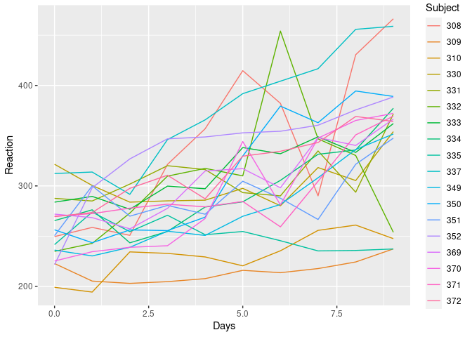

The pbkrtest package: Parametric Bootstrap, Kenward-Roger and Satterthwaite Based Methods for Tests in Mixed Models ================
pbkrtest do for you?pbkrtest do for you?
Hypothesis test in mixed models (also called random effects models, hierarchical models etc) is most commonly based on large sample asymptotics: When the amount of information becomes large, a test can be based an a χ2-approximation. In small sample cases, this approximation can be very unreliable. The pbkrtest provides alternatives to this approximation. To be specific: For linear mixed models (as implemented in the lme4 package), pbkrtest implements the following tests for fixed effects:
Moreover, for generalized linear mixed models (as implemented in lme4) and for generalized linear models, pbkrtest also implements a parametric bootstrap test
The facilities of the package are documented in the paper by Halekoh and Højsgaard (2012) Please see citation("pbkrtest") for information about citing the paper and the package. If you use the package in your work, please do cite the 2012-paper. Please notice: There are other packages that use pbkrtest under the hood. If you use one of those packages, please do also cite our 2012 paper.
We also refer to the Webpage for the package
library(pbkrtest)
library(ggplot2)
## Sugar beets: Does suger content depend on harvest time?
beets |> ggplot(aes(x=sow, y=sugpct, group=harvest)) +
geom_jitter(aes(color=harvest), width=0)
fm0 <- lmer(sugpct ~ block + sow + harvest + (1|block:harvest), data=beets)
fm1 <- update(fm0, .~. -harvest)
## Is there an effect of harvest time?
an <- anova(fm0, fm1)
pb <- PBmodcomp(fm0, fm1)
kr <- KRmodcomp(fm0, fm1)
sa <- SATmodcomp(fm0, fm1)
tidy(an)
#> # A tibble: 2 × 9
#> term npar AIC BIC logLik deviance statistic df p.value
#> <chr> <dbl> <dbl> <dbl> <dbl> <dbl> <dbl> <dbl> <dbl>
#> 1 fm1 9 -69.1 -56.5 43.5 -87.1 NA NA NA
#> 2 fm0 10 -80.0 -66.0 50.0 -100. 12.9 1 0.000326
tidy(pb)
#> # A tibble: 2 × 4
#> type stat df p.value
#> <chr> <dbl> <dbl> <dbl>
#> 1 LRT 12.9 1 0.000326
#> 2 PBtest 12.9 NA 0.0290
tidy(kr)
#> # A tibble: 1 × 6
#> type stat ndf ddf F.scaling p.value
#> <chr> <dbl> <int> <dbl> <dbl> <dbl>
#> 1 Ftest 15.2 1 2.00 1 0.0599
tidy(sa)
#> # A tibble: 1 × 5
#> type statistic ndf ddf p.value
#> <chr> <dbl> <int> <dbl> <dbl>
#> 1 Ftest 15.2 1 2.00 0.0599Please find more examples in the other vignettes available at https://hojsgaard.github.io/pbkrtest/.